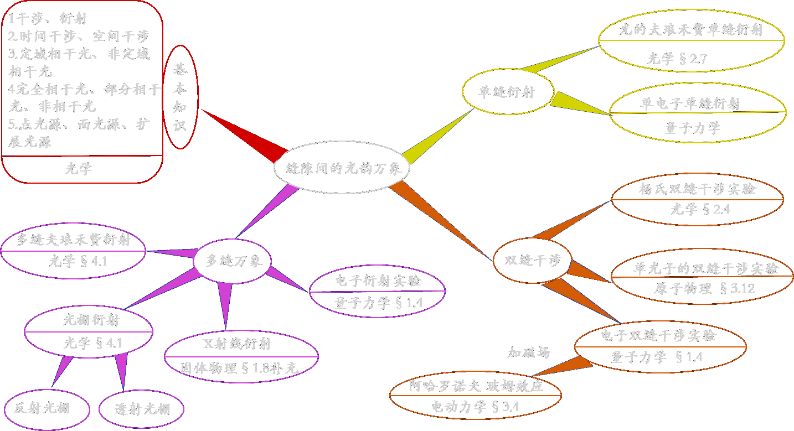

| 对比维度 | 干涉 | 衍射 |
|---|---|---|
| 核心定义 | 两束或两束以上满足相干条件（频率相同、振动方向存在相互平行的分量、相位差稳定）的光叠加，形成明暗相间的稳定强度分布。 | 光在传播过程中遇到障碍物时，偏离直线传播的现象。 |
| 关键公式 |
（1）干涉合成光强：\( I = I_1 + I_2 + 2\sqrt{I_1I_2}\cos\delta \)
（2）杨氏双缝干涉条纹间距：\(Δx = \frac{\lambda D}{d} \)
其中
\( I_1 \)： 光束1的强度\( I_2 \)： 光束2的强度\( \delta \)： 两束光在该点的光程差\( \lambda \)： 入射光的波长\( D \)： 双缝到接收屏的垂直距离\( d \)： 双缝之间的间距 |
（1）单缝衍射光强：\( I = I_0\left( \frac{\sin\alpha}{\alpha} \right)^2 \quad (\text{其中 } \alpha = \frac{\pi a \sin\theta}{\lambda}) \)
（2）夫琅禾费单缝衍射中央明宽度：\(Δx_0 = \frac{2\lambda D}{a} \)
其中
\( I_0 \)： 衍射场中心强度\( \alpha \)： 单缝衍射辅助量\( a \)： 单缝宽度\( \theta \)： 衍射角\( \lambda \)： 入射光的波长\( D \)： 单缝到接受屏的距离 |
| 典型图例 |  |
 |
| 典型事例 | 杨氏双缝干涉、薄膜干涉、迈克尔逊干涉仪 | 单缝衍射、圆孔衍射（艾里斑）、光栅衍射 |
| 主要区别 |
（1）叠加本质：干涉是"有限束相干光"的直接叠加，衍射是"无限次波"的相干叠加
（2）图样特征：干涉条纹等宽、等间距、强度均匀（理想情况），衍射条纹中央亮纹占大部分光能，两侧条纹不等宽、强度衰减
（3）边界关联：干涉分析中可忽略衍射调制（如双缝间距远大于缝宽），衍射过程中必然伴随次波间的干涉
|
|
| 对比维度 | 时间干涉 | 空间干涉 |
|---|---|---|
| 核心定义 | 同一光源在不同时刻发出的光（即同一光源的不同波列）在空间某点相遇时的相干性，反映光源的单色性 | 扩展光源上不同点发出的光在空间某点相遇时的相干性，反映光源的空间扩展程度。 |
| 关键公式 |
（1）相干长度：\( L_{\mathrm{c}} = \frac{\lambda^2}{\Delta\lambda} \)
（2）相干时间：\( \tau_{\mathrm{c}} = \frac{L_{\mathrm{c}}}{c} \)
（3）时间相干性反比关系：\( \tau_{\mathrm{c}} \cdot Δν = 1 \)
其中
\( \lambda \)： 光的中心波长\(Δλ\)： 光谱线宽度\( c \)： 真空中的光速\(Δν\)： 光源发光的频率范围 |
（1）空间相干性相干孔径角：\( \theta_{\mathrm{c}} \approx \frac{\lambda}{b} \)
（2）空间相干性相干面积：\( A_{\mathrm{c}} \approx \left( \frac{\lambda R}{b} \right)^2 \)
（3）横向相干宽度：\( d_{\mathrm{c}} = \frac{\lambda R}{b} \)
（4）相干条件：\( bΔθ_{\mathrm{c}} \approx \lambda \)
其中
\( \lambda \)： 光的中心波长\( b \)： 光源横向线度\( R \)： 光源到干涉平面的距离\( Δθ_{\mathrm{c}} \)： 相干孔径角 |
| 典型事例 | 激光（相干长度可达千米级）、普通单色光（相干长度毫米至厘米级） | 点光源（空间相干性好）、扩展光源（空间相干性差） |
| 主要区别 |
（1）决定因素：时间相干由光源单色性（波列长度）决定，单色性越好，相干长度越长；空间相干由光源尺寸决定，光源越小，空间相干性越好
（2）实验表现：时间相干影响干涉条纹的衬比度，单色性越差，条纹对比度越低；空间相干限制干涉装置中允许的最大缝间距，超过相干宽度则无干涉条纹
（3）物理本质：时间相干源于光源发光的断续性（波列有限长），空间相干源于扩展光源各点发光的独立性
|
|
| 对比维度 | 定域干涉 | 非定域干涉 |
|---|---|---|
| 核心定义 | 使用扩展光源照明时，由于光源上不同点产生的干涉图样相互叠加，仅在特定曲面（定域面）附近区域能观察到衬比度较高的干涉条纹，超出该区域条纹对比度迅速下降直至不可见。此类干涉现象称为定域干涉。 | 使用点光源照明时，在相干光叠加区域内的任意位置均可观察到清晰的干涉条纹，条纹不局限于特定空间区域。此类干涉现象称为非定域干涉。 |
| 关键特性 |
（1）定域面位置由干涉装置与光源几何共同决定（如等厚干涉定域于薄膜表面附近）
（2）可采用扩展光源提高条纹亮度，且不显著降低条纹对比度
|
（1）条纹遍布整个相干光叠加区域，任意垂直于光路的截面上均可观察到稳定条纹
（2）要求光源具有较好的空间相干性（如点光源或极细缝光源）
|
| 典型事例 | 薄膜等厚干涉、劈尖干涉、牛顿环 | 杨氏双缝干涉（点光源照明）、激光干涉 |
| 主要区别 |
（1）干涉区域：定域干涉条纹局限于特定平面或曲面附近，而非定域干涉条纹遍布整个相干光叠加区
（2）光源要求：定域干涉可使用扩展光源（兼顾亮度与相干性），而非定域干涉必须使用点光源或相干性极好的光源
（3）应用场景：定域干涉常用于精密测量（如劈尖测厚度、牛顿环测曲率半径），而非定域干涉多用于基础干涉实验（如验证波动特性）
|
|
| 对比维度 | 完全相干光 | 部分相干光 | 非相干光 |
|---|---|---|---|
| 核心定义 |
在光场叠加区域内，任意两点的光场具有固定的相位关系，干涉条纹衬比度。此时光场具有理想的时间相干性与空间相干性。 （杨氏双缝干涉中，当扩展光源宽度\( b \ll b_{\text{c}} \) 时，双缝 \( S_1 \)、\( S_2 \) 处的光场可视为完全相干。\( b_{\text{c}} = \frac{\lambda R}{d} \) 为临界宽度（衬比度首次降为零时的光源宽度），\( \lambda \) 为光的中心波长，\( R \) 为光源到双缝所在平面的垂直距离，\( d \) 为双缝间距。） |
光场相干性介于完全相干与非相干之间，干涉条纹衬比度满足 0 < γ < 1。相干条件部分满足。 （杨氏双缝干涉中，当扩展光源宽度 0 <b< \(b_{\text{c}}\)时，双缝 \(S_1\)、\(S_2\) 处的光场为部分相干） |
在光场叠加区域内，任意两点的光场相位差随机变化，干涉项时间平均为零，干涉条纹衬比度，无稳定干涉图样。 （杨氏双缝干涉中，当扩展光源宽度 \(b\ge b_{\text{c}}\) 时，双缝 \(S_1\)、\(S_2\) 处的光场为非相干） |
| 关键特性 |
（1）相位差稳定，干涉效应显著
（2）光源具有理想的单色性（时间相干性）与极小的发光尺寸（空间相干性）
|
（1）衬比度\( \gamma = \frac{I_{\max}-I_{\min}}{I_{\max}+I_{\min}} \)
（2）条纹清晰度介于完全相干与非相干之间
|
（1）相位差随机变化，干涉项时间平均为零
（2）光强直接叠加，无干涉现象
|
| 典型事例 | 单色激光 同波列拆分的光（如迈克尔孙干涉仪拆分的光） | 普通钠光灯（谱线有一定宽度） 有限尺寸的扩展光源 | 太阳光、白炽灯 多个独立光源叠加的光 |
| 主要区别 |
干涉衬比度：\(\gamma = 1\)
光源特性：单一相干波源（点光源、单色性好）
光强分布：明暗条纹对比度高
|
干涉衬比度：\(0 < \gamma < 1\)
光源特性：准单色、有限扩展光源
光强分布：条纹模糊，对比度下降
|
干涉衬比度：\(\gamma = 0\)
光源特性：大量独立发光单元(原子/分子)
光强分布：无条纹，仅均匀光强叠加
|
| 对比维度 | 点光源 | 面光源 | 扩展光源 |
|---|---|---|---|
| 核心定义 | 来自点光源的光束射在薄膜上时，在上下表面两束反射光的交叠区内任一点都有干涉条纹，这种条纹叫做非定域条纹。 几何尺寸可忽略的理想光源，能在交叠区任意点形成干涉条纹。点光源是指几何尺寸可忽略的理想光源，发出球面波。来自点光源的光束在薄膜上下表面反射后，两束反射光的交叠区域内任意位置均可产生干涉条纹，这种条纹称为非定域条纹。 |
面光源是指在二维平面上具有一定发光面积的光源，可看作由大量不相干的点光源组成。面光源是扩展光源的一种形式。 | 扩展光源是指具有一定几何尺寸的实际光源，可视为多个不相干点光源的集合。在扩展光源照射下，仅在空间某个特定曲面（称为定域面）上干涉条纹的衬比度最大，在该曲面前后一定范围内条纹可被观测，超出此范围则因衬比度趋于零而无法辨认，此类条纹称为定域条纹。 |
| 关键特性 |
1.空间相干性理想，可产生非定域干涉。
2.光场分布：\( \tilde{U} = \frac{a}{r} e^{ikr} \)（球面波复振幅），其中\(a\)为振幅常数，\(r\)为观察点到点光源的距离，\( k = \dfrac{2π}{λ}\) 为波数。
|
1.横向相干宽度 \( d_{\text{c}} = \dfrac{1}{b}\)，其中\(b\)为光源尺寸（有效宽度或直径）。
2.亮度较高，可为定域干涉提供足够光强。
3.作为扩展光源的一种，其尺寸增大时衍射效应减弱，光的行为趋近几何光学。
|
1.空间相干性随光源尺寸增大而降低。
2.干涉条纹具有定域性，仅在定域面附近衬比度较高。
3.光源尺寸足够大时，衍射效应可忽略，光近似沿直线传播。
|
| 典型事例 | 激光笔（近似）、远处的星体 | 平板LED灯、实验室用的毛玻璃面光源 | 太阳光、实验室用的钠光灯、汞光灯 |
| 主要区别 |
1.光场特性：光场为单一球面波，空间相干性最佳。
2.相干应用：适用于非定域干涉（如杨氏双缝实验）。
3.衍射影响：衍射效应显著，单缝衍射图样清晰。
4.成像质量：成像接近理想像点。
|
1.光场特性：多个球面波的叠加，空间相干性随尺寸增大而变差。
2.相干应用：用于产生定域干涉（如薄膜干涉），兼顾亮度与条纹衬比度。
3.衍射影响：尺寸较小时仍有衍射效应，尺寸增大时衍射逐渐减弱。
4.成像质量：成像亮度高，但存在半影区，边缘模糊。
|
与面光源类似，但更强调其干涉条纹的定域性。
|
| 两个点光源的特殊距离：当两个点光源产生的干涉条纹错开半个条纹间距（即 \( \delta x = \frac{1}{2} \Delta x \)）时，合成强度均匀，衬比度为零，干涉条纹消失。 | —— | 扩展光源的特殊长度：对于线光源，当边缘两点产生的干涉条纹错开恰好一个条纹宽度（即 \( \delta x = \Delta x \)）时，整体干涉条纹的衬比度为零，干涉条纹消失。 |
